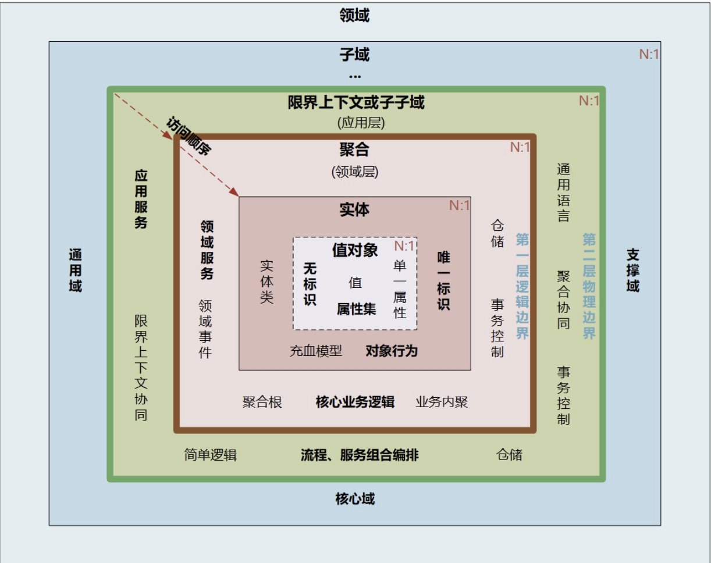
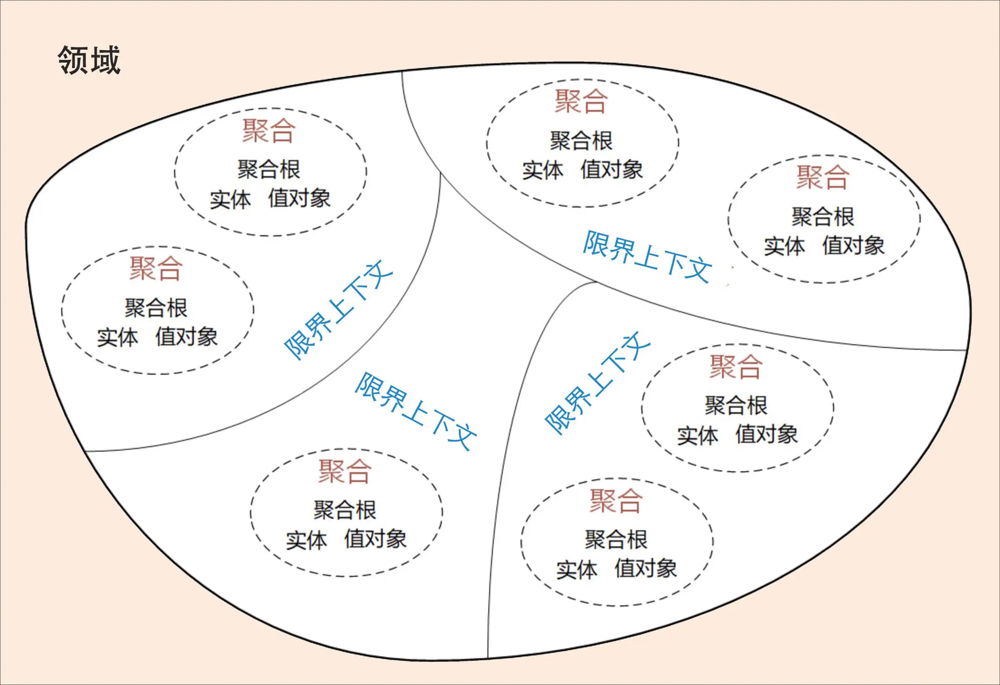
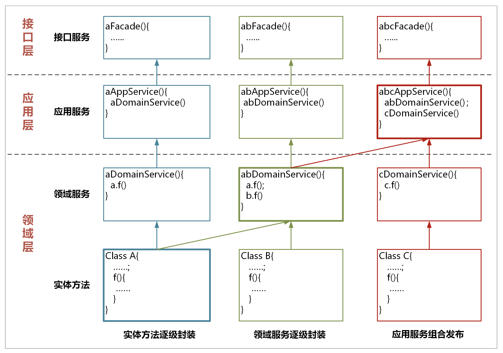
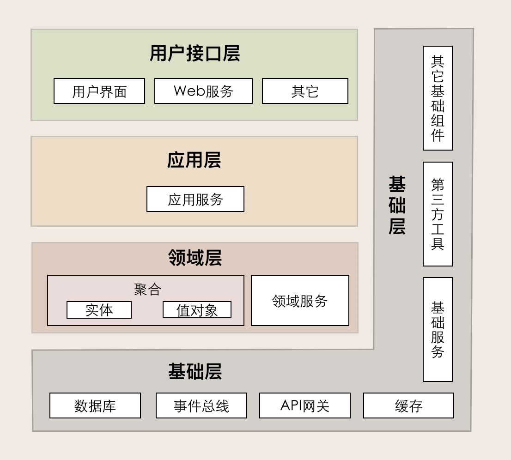

背景
开始前声明，我不相信技术上存在任何银弹，包括微服务、DDD，不要指望用一套方法论或者架构能解决所有问题，能够根据当时的情况（资源、人才、业务）权衡出最符合当时场景的架构，才是一个合格的架构师的价值所在。
在讨论 DDD 时经常会一起讨论的是两种模型，传统贫血模型和 DDD 所推崇的充血模型。对于业务不复杂的系统开发来说，基于贫血模型的传统开发模式简单够用，基于充血模型的 DDD 开发模式有点大材小用，无法发挥作用。比如数据统计和分析，DDD 很多方法可能都用不上，或用得并不顺手，而传统的方法很容易就解决了。
我在大概 19 年左右看过一些 DDD 相关的内容，也在上家公司团队内推行过 DDD 的调研，但限于上家公司对技术升级、培养没有那么看重，并且推行 DDD 对人员的技术要求也比较高，只做了一次内部分享就没再有下文了。
最近来到新的部门后，这边在推行使用 DDD 来梳理我们的业务架构，从更高的视角审视我们目前的技术架构，用于评估架构是否合理、服务是否应当做一些拆分或者将应该归在一起的业务进行合并。我觉得这个做法是合理并且正确的，DDD 更推崇的是设计思想，可以用这个思想来指导我们做业务建模和服务设计。我们没必要为了 DDD 而 DDD，更不能脱离领域模型来空谈微服务设计。
由于时间久远，当时看过的内容已经忘的七七八八了，翻开之前看文章时做的一些记录，将 DDD 中常用的 “黑话” 回顾一下，记录在下文，尽量和其他人的认知对齐，在交流时能更通畅一些。
八股图镇楼

DDD 与微服务的关系：
- DDD 是一种架构设计方法，微服务是一种架构风格，两者从本质上都是为了追求高响应力，而从业务视角去分离应用系统建设复杂度的手段。
- 两者都强调从业务出发，其核心要义是强调根据业务发展，合理划分领域边界，持续调整现有架构，优化现有代码，以保持架构和代码的生命力，也就是我们常说的演进式架构。
- DDD 主要关注：从业务领域视角划分领域边界，构建通用语言进行高效沟通，通过业务抽象，建立领域模型，维持业务和代码的逻辑一致性。
- 微服务主要关注：运行时的进程间通信、容错和故障隔离，实现去中心化数据管理和去中心化服务治理，关注微服务的独立开发、测试、构建和部署。
领域
DDD 的领域就是这个边界内要解决的业务问题域。

子域
我们把划分出来的多个子领域称为子域，每个子域对应一个更小的问题域或更小的业务范围。
子域可以根据自身重要性和功能属性划分为三类子域：
- 核心域：决定了产品和公司核心竞争力，它是业务成功的主要因素和公司的核心竞争力。
- 通用域：没有太多个性化的诉求，同时被多个子域使用的通用功能子域，如认证、权限。
- 支持域：不包含决定产品和公司核心竞争力的功能，也不包含通用功能的子域，如数据代码类的数据字典系统
限界上下文
用来封装通用语言和领域对象，提供上下文环境，保证在领域之内的一些术语、业务相关对象等（通用语言）有一个确切的含义，没有二义性。
可以将限界上下文拆解为两个词：限界和上下文
- 限界就是领域的边界
- 而上下文则是语义环境
理论上限界上下文就是微服务的边界。
聚合
聚合就是由业务和逻辑紧密关联的实体和值对象组合而成的，聚合是数据修改和持久化的基本单元，每一个聚合对应一个仓储，实现数据的持久化。
聚合的特点：
高内聚、低耦合，它是领域模型中最底层的边界，可以作为拆分微服务的最小单位。
一个微服务可以包含多个聚合，聚合之间的边界是微服务内天然的逻辑边界。
聚合的一个设计原则：在边界之外使用最终一致性。一次事务最多只能更改一个聚合的状态。如果一次业务操作涉及多个聚合状态的更改，应采用领域事件的最终一致性。
聚合根
- 根据业务单一职责和高内聚原则，定义了聚合内部应该包含哪些实体和值对象
- 主要目的是为了避免由于复杂数据模型缺少统一的业务规则控制，而导致聚合、实体之间数据不一致性的问题。
- 如果把聚合比作组织，那聚合根就是这个组织的负责人。聚合根也称为根实体，它不仅是实体，还是聚合的管理者。
聚合根的特点：
聚合根是实体，有实体的特点，具有全局唯一标识，有独立的生命周期。
- 一个聚合只有一个聚合根，聚合根在聚合内对实体和值对象采用直接对象引用的方式进行组织和协调。
- 聚合根与聚合根之间通过 ID 关联的方式实现聚合之间的协同。
领域服务
如果一个业务动作或行为跨多个实体，我们就需要设计领域服务。
- 领域服务通过对多个实体和实体方法进行组合，完成核心业务逻辑。
- 领域服务是位于实体方法之上和应用服务之下的一层业务逻辑。
在微服务内部，实体的方法被领域服务组合和封装，领域服务又被应用服务组合和封装。
仓储
每一个聚合都有一个仓储，仓储主要用来完成数据查询和持久化操作。
领域事件
领域事件是领域模型中非常重要的一部分，用来表示领域中发生的事件。一个领域事件将导致进一步的业务操作，在实现业务解耦的同时，还有助于形成完整的业务闭环。
如果发生某种事件后，会触发进一步的操作，那么这个事件很可能就是领域事件。
领域事件驱动设计可以切断领域模型之间的强依赖关系，事件发布完成后，发布方不必关心后续订阅方事件处理是否成功，这样可以实现领域模型的解耦，维护领域模型的独立性和数据的一致性。
在领域模型映射到微服务系统架构时，领域事件可以解耦微服务，微服务之间的数据不必要求强一致性，而是基于事件的最终一致性。
通过领域事件驱动的异步化机制，可以推动业务流程和数据在各个不同微服务之间的流转，实现微服务的解耦，减轻微服务之间服务调用的压力，提升用户体验。
实体
在 DDD 中有这样一类对象，它们拥有唯一标识符，且标识符在历经各种状态变更后仍能保持一致。对这些对象而言，重要的不是其属性，而是其延续性和标识，对象的延续性和标识会跨越甚至超出软件的生命周期。我们把这样的对象称为实体。
在代码模型中，实体的表现形式是实体类，这个类包含了实体的属性和方法，通过这些方法实现实体自身的业务逻辑。
聚合根是一种特殊的实体，它有自己的属性和方法。聚合根可以实现聚合之间的对象引用，还可以引用聚合内的所有实体。
实体的特点：有 ID 标识，通过 ID 判断相等性，ID 在聚合内唯一即可。
- 状态可变，它依附于聚合根，其生命周期由聚合根管理。
- 实体一般会持久化，但与数据库持久化对象不一定是一对一的关系。
- 实体可以引用聚合内的聚合根、实体和值对象。
值对象
通过对象属性值来识别的对象，它将多个相关属性组合为一个概念整体。在 DDD 中用来描述领域的特定方面，并且是一个没有标识符的对象，叫作值对象。
值对象创建后就不允许修改了，只能用另外一个值对象来整体替换。
值对象的特点：无 ID，不可变，无生命周期，用完即扔。
- 值对象之间通过属性值判断相等性。
- 它的核心本质是值，是一组概念完整的属性组成的集合，用于描述实体的状态和特征。
- 值对象尽量只引用值对象。
实体 vs 值对象
实体和值对象是组成领域模型的基础单元。
- 实体一般对应业务对象，它具有业务属性和业务行为
- 值对象主要是属性集合，对实体的状态和特征进行描述
实体是看得到、摸得着的实实在在的业务对象，实体具有业务属性、业务行为和业务逻辑。而值对象只是若干个属性的集合，只有数据初始化操作和有限的不涉及修改数据的行为，基本不包含业务逻辑。值对象的属性集虽然在物理上独立出来了，但在逻辑上它仍然是实体属性的一部分，用于描述实体的特征。
聚合与实体、值对象的关系
领域模型内的实体和值对象就好比个体，而能让实体和值对象协同工作的组织就是聚合，它用来确保这些领域对象在实现共同的业务逻辑时，能保证数据的一致性。
聚合就是由业务和逻辑紧密关联的实体和值对象组合而成的，聚合是数据修改和持久化的基本单元，每一个聚合对应一个仓储，实现数据的持久化。
聚合之间通过聚合根 ID 关联引用，如果需要访问其它聚合的实体，就要先访问聚合根，再导航到聚合内部实体，外部对象不能直接访问聚合内实体。
领域事件基本属性至少包括：
- 事件唯一标识
- 发生时间
- 事件类型
- 事件源
数据一致性
聚合内数据强一致性，而聚合之间数据最终一致性。
在一次事务中，最多只能更改一个聚合的状态。如果一次业务操作涉及多个聚合状态的更改，应采用领域事件的方式异步修改相关的聚合，实现聚合之间的解耦。
产品愿景
产品愿景是对产品顶层价值设计，对产品目标用户、核心价值、差异化竞争点等信息达成一致，避免产品偏离方向。
场景分析
场景分析是从用户视角出发，探索业务领域中的典型场景，产出领域中需要支撑的场景分类、用例操作以及不同子域之间的依赖关系，用以支撑领域建模。
领域建模
领域建模是通过对业务和问题域进行分析，建立领域模型。
- 向上通过限界上下文指导微服务边界设计
- 向下通过聚合指导实体对象设计
DDD 战略设计和战术设计
战略设计主要从业务视角出发，建立业务领域模型，划分领域边界，建立通用语言的限界上下文，限界上下文可以作为微服务设计的参考边界。
战术设计则从技术视角出发，侧重于领域模型的技术实现，完成软件开发和落地，包括：聚合根、实体、值对象、领域服务、应用服务和资源库等代码逻辑的设计和实现。
服务的封装和调用方式
1. 应用服务的组合和编排
应用服务会对多个领域服务进行组合和编排，暴露给用户接口层，供前端应用调用。
2. 领域服务的组合封装
领域服务会对多个实体和实体方法进行组合和编排，供应用服务调用。
3. 实体方法的封装
实体方法是最底层的原子业务逻辑。

DDD 的设计过程：
- 在事件风暴中，我们会梳理出业务过程中的用户操作、事件以及外部依赖关系等，根据这些要素梳理出实体等领域对象。
- 根据实体对象之间的业务关联性，将业务紧密相关的多个实体进行组合形成聚合，聚合之间是第一层边界。
- 根据业务及语义边界等因素将一个或者多个聚合划定在一个限界上下文内，形成领域模型，限界上下文之间的边界是第二层边界。
领域对象设计过程
- 设计实体
- 找出聚合根
- 设计值对象
- 设计领域事件
- 设计领域服务
- 设计仓储
DDD 分层架构从上到下依次是
用户接口层
用户接口层负责向用户显示信息和解释用户指令。这里的用户可能是：用户、程序、自动化测试和批处理脚本等等。
应用层
应用层是很薄的一层，理论上不应该有业务规则或逻辑，主要面向用例和流程相关的操作。
领域层
领域层的作用是实现企业核心业务逻辑，通过各种校验手段保证业务的正确性。
领域层包含聚合根、实体、值对象、领域服务等领域模型中的领域对象。
基础层
- 基础层是贯穿所有层的，它的作用就是为其它各层提供通用的技术和基础服务，包括第三方工具、驱动、消息中间件、网关、文件、缓存以及数据库等。比较常见的功能还是提供数据库持久化。

参考
- DDD 实战
- 设计模式之美